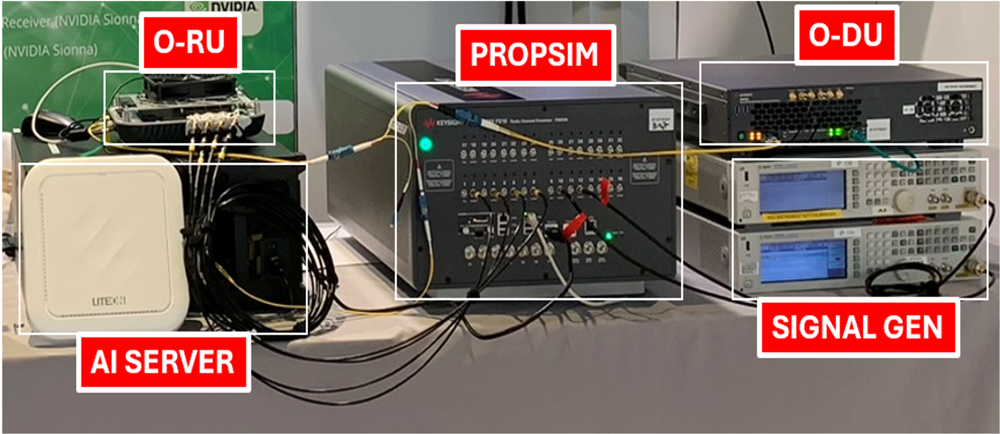

Hardware-in-the-loop research setup · image supplied by project researcher
KEYSIGHT TECHNOLOGIES · PUBLIC RESEARCH
Hardware-in-the-loop AI channel estimation
Exploring phase-aware deep learning for wireless channel estimation, bridging model development with hardware-in-the-loop validation. Presented at IEEE CSCN 2026.
Deep learning5G/6GHIL validation
✳ IEEE CSCN 2026 · Best Demo/Poster Award · Official recognition ↗